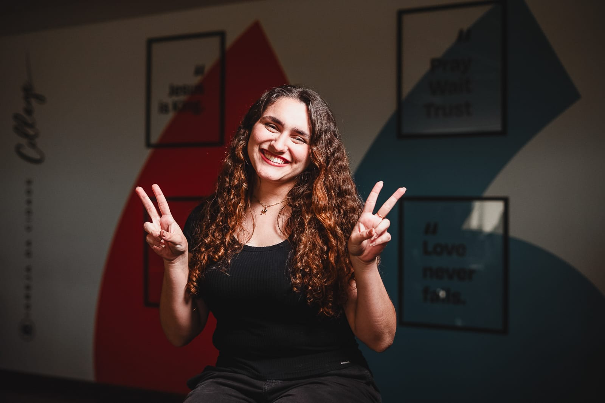
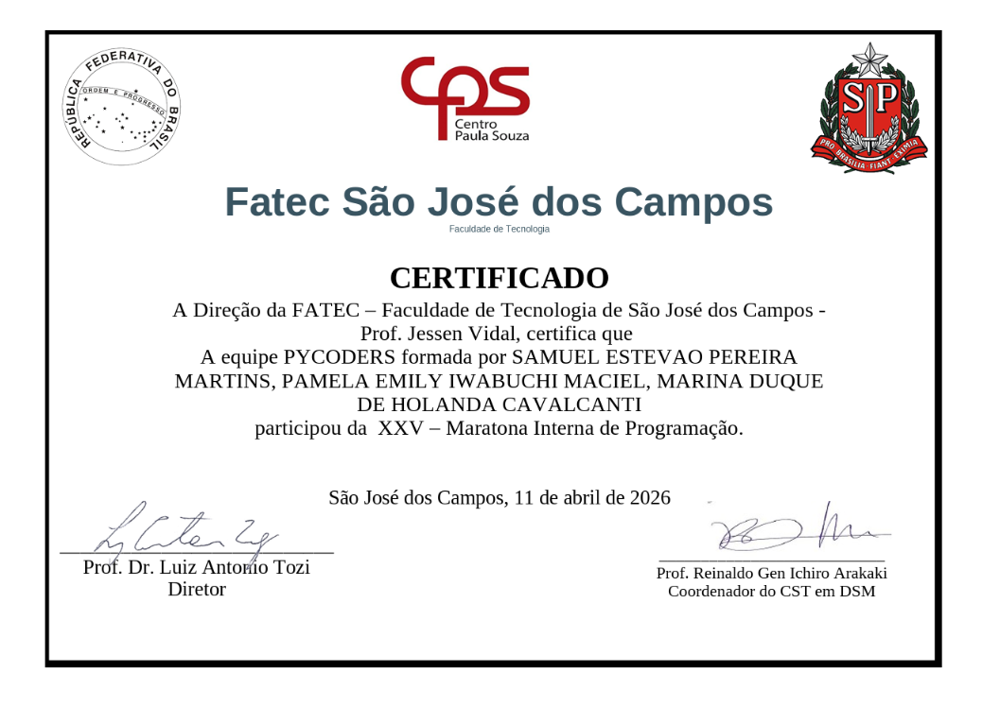

Olá, eu sou Marina Duque Cavalcanti
Desenvolvedora em formação focada em Desenvolvimento Web, Design Digital e Inteligência Artificial

Sobre Mim
Marina Duque de Holanda Cavalcanti
Formação atual: Desenvolvimento de Software Multiplataforma (DSM) - FATEC São José dos Campos
Objetivo acadêmico: Concluir o curso de Desenvolvimento de Software Multiplataforma na FATEC aprofundando meus conhecimentos em desenvolvimento web, design de interfaces e IA, e participar de projetos e eventos que me aproximem de problemas reais.
Objetivo profissional: Atuar como desenvolvedora de software, unindo minha experiência em UI/UX e QA com a programação para criar produtos bem pensados e confiáveis. Busco também me aprofundar na parte de desenvolvimento de softwares de design de animação, juntanso meus interesses em atuar em áreas de tecnologia e de artes.
Áreas de interesse: Design Digital e Inteligência Artificial

Currículo
Formação
- FATEC São José dos Campos - DSM
Cursos
- SAGA - Arte e Jogos
Medalhas
- Canguru 2024 - Prata
Certificados
- Inglês - Cultura Inglesa
Projetos
Projetos Acadêmicos (API)
Projetos Profissionais
Projetos Pessoais
Habilidades
Nível: 1 = conheço o básico · 2 = já usei em atividades guiadas · 3 = desenvolvo com autonomia · 4 = tenho domínio · 5 = fluente
Técnicas
Comportamentais
Eventos
Interfatec

